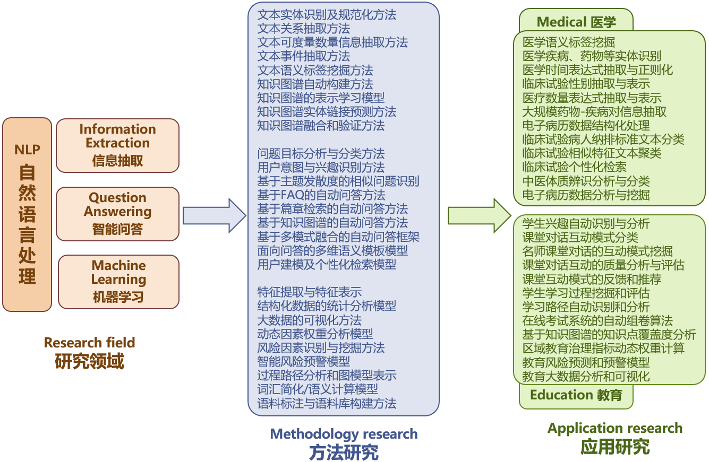

团队介绍 (Introduction):
华南师范大学文本分析与挖掘实验室(TAM Lab)由计算机学院郝天永教授于2018年发起建立(前身为2014年成立的自然语言处理实验室)，同学院刘海、沈映珊、詹俦军、闫恩亮老师联合指导。团队近年来获国家自然科学基金2项、国家人社部、教育部、广东省优青、香港GRF、香港CRF、广州市民生科技攻关计划等项目支撑，获科研经费超过800万元。
团队主要针对目前医学自然语言处理、文本挖掘、智能问答中存在的关键科学问题，从信息抽取、数据挖掘、大数据处理、人工智能角度出发，开展方法研究和应用研究工作。
研究内容 (Research Topics):

1）方法研究：信息抽取 (Information Extraction)
从非结构化文本识别和抽取关键信息对于大规模文本数据的分析和理解具有重要意义。实验室在文本实体识别及规范化、文本关系抽取、文本可度量数量信息抽取、时间信息抽取、事件信息抽取、性别等关键信息抽取、语义标签挖掘等方面开展方法模型研究，同时在知识图谱自动构建、知识图谱的表示学习、知识图谱实体链接预测、知识图谱融合和验证等方面开展方法研究。
2）方法研究：智能问答(Question Answering)
智能问答是信息检索领域的一个重要分支并逐渐成为研究热点。智能问答系统的任务是对以自然语言表达的问题找出简短而准确的答案，并以自然语言的表达方式返回用户。实验室开展问题目标分析与分类方法、用户意图与兴趣识别方法、基于主题发散度的相似问题识别、基于FAQ的自动问答方法、基于篇章检索的自动问答方法、基于知识图谱的自动问答方法、基于多模式融合的自动问答框架、面向问答的多维语义模板模型、用户建模及个性化检索模型等方法研究，以提高问答系统的精准性、智能性和实用性。
3）方法研究：机器学习(Machine Learning)
含深度学习在内的机器学习方法广泛应用与自然语言处理的多种具体任务中并发挥极其重要的作用。实验室开展特征提取与特征表示、结构化数据的统计分析模型、大数据的可视化方法、动态因素权重分析模型、风险因素识别与挖掘方法、智能风险预警模型、过程路径分析和图模型表示、词汇简化/语义计算模型、语料标注与语料库构建方法、机器翻译等方面的方法研究。
4）应用研究：医学智能 (Medical Informatics)
医学文本的智能分析与挖掘逐渐成为一个热门而重要的研究领域，电子病历、电子健康档案、医学文献、临床指南、监管报告等医疗健康相关文本数据随着信息技术的发展而急速增加，利用自然语言处理、数据挖掘技术快速有效地抽取与挖掘这些海量文本数据将对社会公共健康、医疗决策等诸多方面产生积极而重要的影响。实验室开展医学语义标签挖掘、医学疾病药物等实体识别、医学时间表达式抽取与正则化、临床试验性别抽取与表示、医疗数量表达式抽取与表示、大规模药物-疾病对信息抽取、电子病历数据结构化处理、临床试验病人纳排标准文本分类、临床试验相似特征文本聚类、临床试验个性化检索、中医体质辨识分析与分类、电子病历数据分析与挖掘等研究。
5）应用研究：教育智能 (Education AI)
教育信息化的发展，带来了教育形式和学习方式的重大变革，对传统的教育思想、观念、模式、内容和方法产生了巨大冲击，教育智能是依托大数据、人工智能等新一代信息技术打造的智能化、感知化、泛在化的新型教育形态和教育模式，以推动学习个性化、教学精准化和管理科学化等。实验室开展学生兴趣自动识别与分析、课堂对话互动模式分类、名师课堂对话的互动模式挖掘、课堂对话互动的质量分析与评估、课堂互动模式的反馈和推荐、学生学习过程挖掘和评估、学习路径自动识别和分析、在线考试系统的自动组卷算法、基于知识图谱的知识点覆盖度分析、区域教育治理指标动态权重计算、教育风险预测和预警模型、教育大数据分析和可视化等应用研究。